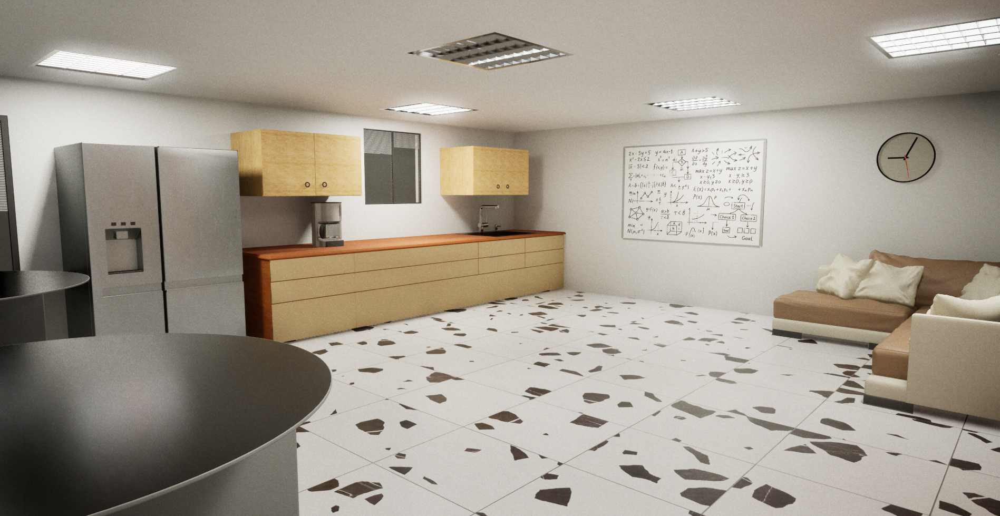

📼 Moi c'est Khoti
Je n’ai jamais travaillé dans un studio, c’est vrai. Mais j’ai toujours été attiré par les jeux qui prennent leur temps, ceux qui installent une ambiance un peu étrange, un peu rugueuse. Alors je me suis dit : pourquoi ne pas en créer un moi-même ?
🕹️ After Hours (titre provisoire)
C’est un jeu narratif. Tu incarnes quelqu’un resté tard dans un bureau, quelque part dans les années 90. Tout est calme, presque trop. Les néons bourdonnent, les machines tournent sans raison. Et peu à peu, quelque chose commence à te déranger.
Le bureau (visuel non définitif)

La cuisine — ambiance neutre... en apparence (visuel non définitif)
📡 En direct sur Twitch
Je code le jeu en stream. Rien d’incroyable, juste mes erreurs et mes avancements. Tu peux passer jeter un œil ou juste dire bonsoir.